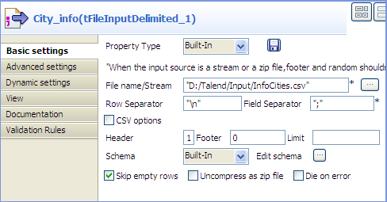
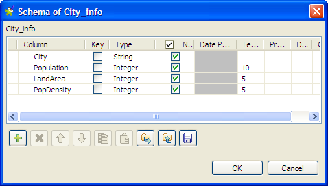
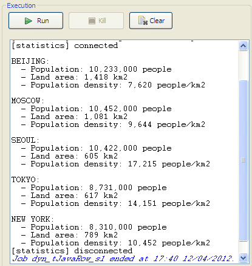
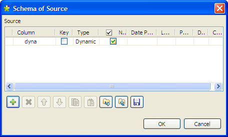
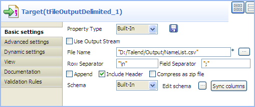
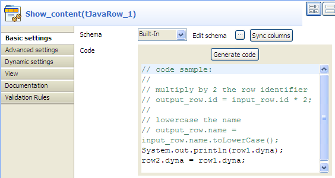

Famille de composant | Custom Code | |
Fonction | Le tJavaRow permet de saisir du code personnalisé afin de l’intégrer dans le programme Talend. Avec le tJavaRow, vous pouvez saisir le code Java qui va être appliqué pour chaque ligne du flux. | |
Objectif | Le tJavaRow permet d’étendre les fonctionnalités du Job Talend grâce au langage Java. | |
Basic settings | Schema et Edit Schema | Un schéma est une description de lignes, il définit le nombre de champs qui sont traités et passés au composant suivant. Le schéma est soit local (Built-in) soit distant dans le Repository. Cliquez sur Edit schema pour modifier le schéma. Notez que si vous modifiez le schéma, il devient automatiquement built-in. NoteCe composant offre l'avantage du schéma dynamique. Cela vous permet de récupérer les colonnes inconnues des fichiers sources ou de copier des groupes de colonnes à partir d'une source sans avoir à mapper chaque colonne une par une. Pour plus d'informations sur les schémas dynamiques, consultez le Guide utilisateur de Talend Data Integration Studio. |
|
| Built-in : Le schéma sera créé et conservé pour ce composant seulement. Voir également le Guide utilisateur de Talend Data Integration Studio. |
|
| Repository : Le schéma existe déjà et est stocké dans le Repository. Ainsi, il peut être réutilisé dans divers projets et Jobs. Voir également le Guide utilisateur de Talend Data Integration Studio. |
| Code | Saisissez le code Java qui va être appliqué pour chaque ligne du flux. |
Advanced settings | Import | Saisissez le code Java permettant d’importer, si nécessaire, la librairie externe utilisée dans le champ Main code de l’onglet Basic settings. |
| tStatCatcher Statistics | Cochez cette case pour collecter les données de log au niveau du composant. |
Utilisation | Ce composant est utilisé en tant que composant de milieu de Job, et doit être relié à un composant de début et à un composant de sortie. | |
Limitation | Il est nécessaire de connaître le langage Java. | |
Dans ce scénario, les informations de quelques villes sont lues depuis un fichier d'entrée délimité et sont transformées à l'aide de code Java via le composant tJavaRow, puis affichées dans la console.
Déposez un composant tFileInputDelimited et un tJavaRow de la Palette dans l'espace de modélisation graphique et renommez-les afin d'identifier leur rôle dans le Job.
Connectez les deux composant à l'aide d'un lien Row > Main.
Double-cliquez sur le tFileInputDelimited pour afficher sa vue Basic settings.
Dans le champ File name/Stream, saisissez le chemin d'accès au fichier d'entrée, entre guillemets doubles, ou parcourez votre système en cliquant sur le bouton [...] et saisissez 1 dans le champ Header.
Dans cet exemple, le fichier d'entrée contient :
City;Population;LandArea;PopDensity Beijing;10233000;1418;7620 Moscow;10452000;1081;9644 Seoul;10422000;605;17215 Tokyo;8731000;617;14151 New York;8310000;789;10452
Cliquez sur le bouton [...] à côté du champ Edit schema pour ouvrir la boîte de dialogue [Schema] et définissez la structure des données du fichier d'entrée. Cliquez sur OK pour valider le schéma et fermer la boîte de dialogue.
Double-cliquez sur le composant tJavaRow afin d'afficher sa vue Basic settings.

Cliquez sur Sync columns afin de vous assurer que le schéma est bien récupéré du composant précédent.
Dans le champ Code, saisissez le code à appliquer à chaque ligne de données.
Dans cet exemple, vous allez mettre des majuscules aux noms des villes, regrouper les nombres supérieurs à 1000 à l'aide de séparateurs de milliers pour une meilleure lecture et afficher les données dans la console :
System.out.print("\n" + row1.City.toUpperCase() + ":"); System.out.print("\n - Population: " + FormatterUtils.format_Number(String.valueOf(row1.Population), ',', '.') + " people"); System.out.print("\n - Land area: " + FormatterUtils.format_Number(String.valueOf(row1.LandArea), ',', '.') + " km2"); System.out.print("\n - Population density: " + FormatterUtils.format_Number(String.valueOf(row1.PopDensity), ',', '.') + " people/km2\n");Avertissement
Dans le champ Code, "row1" fait référence à la connexion vers le tJavaRow. Si vous renommez le lien, vous devez modifier le code.
Appuyez sur les touches Ctrl+S afin de sauvegarder votre Job.
Appuyez sur F6 ou cliquez sur le bouton Run dans la vue Run pour exécuter le Job.
Les informations relatives aux villes sont transformées par le code Java défini dans le tJavaRow et affichées dans la console.

Ce scénario décrit un Job à trois composants utilisant du code Java via le tJavaRow, pour afficher le contenu d'un fichier d'entrée et le passer au composant de sortie. Comme tous les composants de ce Job supportent la fonctionnalité de schéma dynamique, vous pouvez l'utiliser et gagner du temps, en évitant de configurer chaque colonne du schéma.
Déposez un tFileInputDelimited, un tJavaRow et un tFileOutputDelimited de la Palette dans l'espace de modélisation graphique et nommez-les selon leur rôle dans le Job.
Connectez les composants les uns aux autres, à l'aide de liens Row > Main.

Double-cliquez sur le composant tFileInputDelimited nommé Source, pour afficher sa vue Basic settings.

Avertissement
L'option de schéma dynamique n'est supportée qu'en mode Built-In et requiert que le fichier d'entrée ait une ligne d'en-tête .
Dans le champ File name/Stream, saisissez le chemin d'accès au fichier d'entrée, entre guillemets doubles, ou parcourez votre système en cliquant sur le bouton [...].
Dans le champ Header, saisissez 1 afin de définir la première ligne comme ligne d'en-tête.
Cliquez sur le bouton [...] à côté de Edit schema pour ouvrir la boîte de dialogue [Schema].
Cliquez sur le bouton [+] pour ajouter une colonne, donnez un nom à la colonne, dyna dans cet exemple et sélectionnez Dynamic dans la liste Type. Cette colonne dynamique va récupérer les trois colonnes du fichier d'entrée, FirstName, LastName et Address.
Cliquez sur OK pour valider et fermer la boîte de dialogue.
Double-cliquez sur le composant tFileOutputDelimited nommé Target, pour afficher sa vue Basic settings.
Définissez le chemin d'accès au fichier de sortie dans le champ File Name.
Cochez la case Include Header afin d'inclure l'en-tête dans le fichier de sortie. Laissez les autres paramètres tels qu'ils sont.
Double-cliquez sur le tJavaRow pour afficher sa vue Basic settings.
Cliquez sur Sync columns afin de vous assurer que le schéma est bien récupéré du composant précédent.
Dans le champ Code, saisissez le code suivant pour afficher le contenu du fichier d'entrée et passer les données au composant suivant, selon la colonne dynamique :
System.out.println(row1.dyna); row2.dyna = row1.dyna;
Avertissement
Dans le champ Code, "row1" et "row2" correspondent au nom des liens entrant et sortant du tJavaRow. Si vous renommez ces liens, vous devez modifier le code.